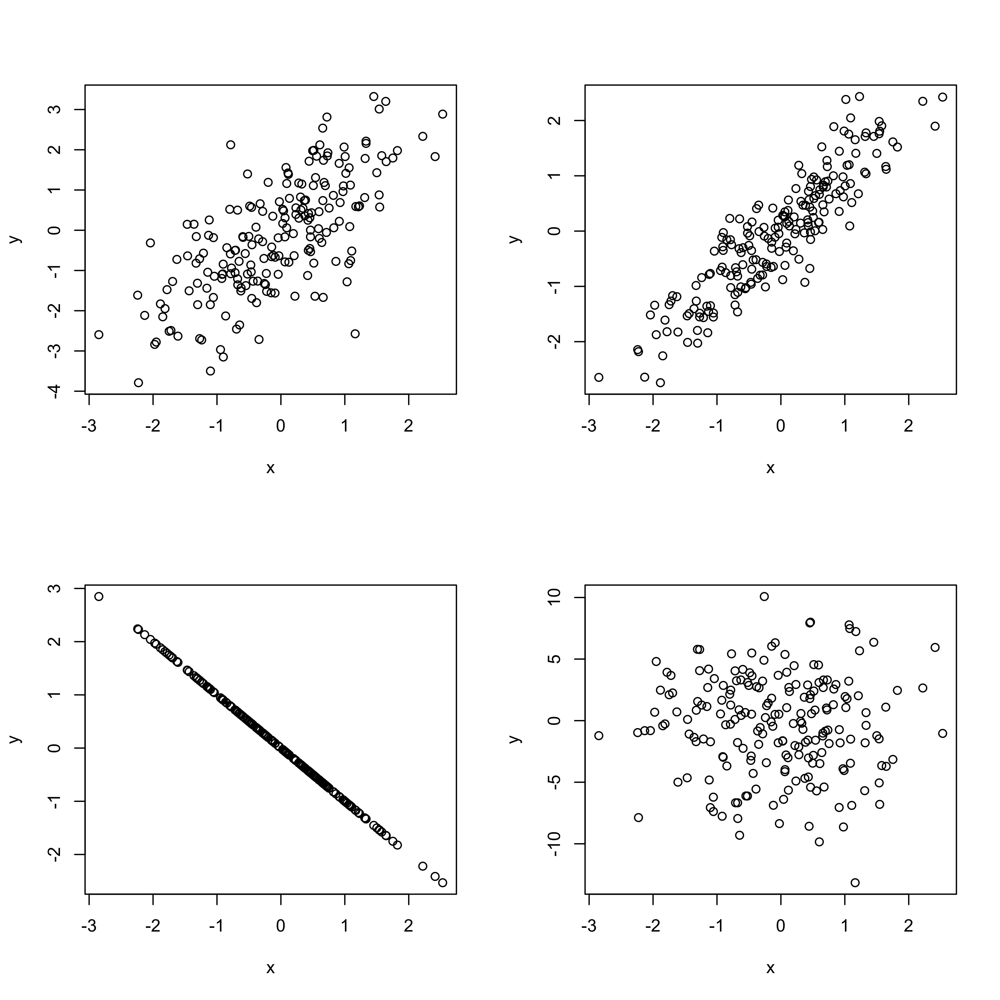

Statistica I
Esercizi 5: covarianza, correlazione, regressione lineare semplice
Homepage
Esercizio A
Nella figura che segue sono riportati i diagrammi a dispersione di 4 coppie di variabili. Ad esse corrispondono i coefficienti di correlazione \rho pari a -1,0,0.7,0.9. Si dica a quale grafico corrisponde ciascun coefficiente.
Esercizio B
La tabella seguente esprime il peso (in chili) e l’altezza (in centimetri) di n = 20 persone adulte di sesso maschile.
| Altezza | Peso |
|---|---|
| 177 | 78 |
| 172 | 68 |
| 181 | 72 |
| 176 | 66 |
| 177 | 73 |
| 174 | 78 |
| 173 | 82 |
| 176 | 80 |
| 172 | 74 |
| 174 | 76 |
| 180 | 70 |
| 172 | 63 |
| 176 | 60 |
| 175 | 77 |
| 181 | 82 |
| 165 | 61 |
| 178 | 78 |
| 193 | 110 |
| 172 | 72 |
| 183 | 81 |
Si forniscano delle opportune misure che descrivono la distribuzione della variabile peso.
La variabile peso risulta asimmetrica?
Si disegni un opportuno grafico che descriva la distribuzione della variabile peso.
La conoscenza dell’altezza degli individui permette una migliore descrizione del peso? Si risponda qualitativamente tramite un grafico.
Si fornisca la funzione di regressione del peso (y) rispetto all’altezza (x). Tale modello si adatta bene ai dati?
C’è un individuo che presenta un residuo elevato? Quale?
Quanto vale la varianza dei residui?
Se si eliminasse dall’analisi tale individuo i risultati cambierebbero in maniera rilevante? Possiamo dire che in questo caso la retta si adatta meglio?
Esercizio C - Regressione con variabili standardizzate
Si considerino due variabili statistiche x ed y e siano \hat{\alpha} e \hat{\beta} le stime ai minimi quadrati dei parametri del modello di regressione y = \alpha + \beta x.
Si considerino quindi le variabili z_i = \frac{x_i − \bar{x}}{\sigma_x}, \qquad w_i = \frac{y_i - \bar{y}}{\sigma_y},\qquad i=1,\dots,n. Inoltre, si consideri il modello di regressione w = \gamma + \delta z.
Si ottengano i coefficienti ai minimi quadrati \hat{\gamma} e \hat{\delta}.
Cosa si può dire circa le devianze residui dei due modelli? E degli indici R^2?
Esercizio D - I dati di Anscombe
Sono date le seguenti osservazioni da 4 regressori e 4 variabili dipendenti
| x^{(1)} | x^{(2)} | x^{(3)} | x^{(4)} | y^{(1)} | y^{(2)} | y^{(3)} | y^{(4)} |
|---|---|---|---|---|---|---|---|
| 10 | 10 | 10 | 8 | 8.04 | 9.14 | 7.46 | 6.58 |
| 8 | 8 | 8 | 8 | 6.95 | 8.14 | 6.77 | 5.76 |
| 13 | 13 | 13 | 8 | 7.58 | 8.74 | 12.74 | 7.71 |
| 9 | 9 | 9 | 8 | 8.81 | 8.77 | 7.11 | 8.84 |
| 11 | 11 | 11 | 8 | 8.33 | 9.26 | 7.81 | 8.47 |
| 14 | 14 | 14 | 8 | 9.96 | 8.10 | 8.84 | 7.04 |
| 6 | 6 | 6 | 8 | 7.24 | 6.13 | 6.08 | 5.25 |
| 4 | 4 | 4 | 19 | 4.26 | 3.10 | 5.39 | 12.50 |
| 12 | 12 | 12 | 8 | 10.84 | 9.13 | 8.15 | 5.56 |
| 7 | 7 | 7 | 8 | 4.82 | 7.26 | 6.42 | 7.91 |
| 5 | 5 | 5 | 8 | 5.68 | 4.74 | 5.73 | 6.89 |
Si calcoli il coefficiente di correlazione per ciascuna delle coppie di variabili x^{(j)} e y^{(j)}, per j=1,\dots,4.
Si disegni il grafico a dispersione per ciascuna coppia di variabili considerata al punto precedente. Si commentino i risultati ottenuti in relazione al punto precedente.
Esercizio E
È opinione diffusa che il consumo di bevande alcoliche sia una delle principali cause di incidenti automobilistici. Con l’obiettivo di verificare una tale opinione, nella tabella seguente vengono forniti il numero di incidenti avvenuti nell’intera rete stradale nelle diverse regioni italiane e la percentuale di persone che consumano di vino per ogni regione.
| Regione | Incidenti | Vino |
|---|---|---|
| Piemonte | 4019 | 60 |
| Valle d’Aosta | 14707 | 59 |
| Lombardia | 407 | 55 |
| Trentino-A.Adige | 46798 | 55 |
| Veneto | 3200 | 60 |
| Friuli-Venezia-Giulia | 18268 | 58 |
| Liguria | 5164 | 58 |
| Emilia Romagna | 9133 | 61 |
| Toscana | 23531 | 58 |
| Umbria | 19869 | 59 |
| Marche | 3614 | 63 |
| Lazio | 7556 | 54 |
| Abruzzo | 27377 | 51 |
| Molise | 4725 | 50 |
| Campania | 470 | 50 |
| Puglia | 9372 | 51 |
| Basilicata | 9315 | 53 |
| Calabria | 741 | 50 |
| Sicilia | 3602 | 43 |
| Sardegna | 12685 | 49 |
Attraverso un grafico, opportunamente commentato, si dia una prima valutazione sulla verifica della relazione sotto studio.
Si costruisca e si stimi un semplice modello lineare che descriva la relazione tra le variabili vino (variabile x) ed incidenti (variabile y).
Si fornisca una misura della qualità del modello per descrivere i dati disponibili.
Si discuta sulla sensatezza dei risultati ottenuti, considerando in particolare le stime ottenute per i parametri.
Esercizio F (difficile)
Per n = 10 paesi dell’Unione Europea si è osservato il prezzo in euro di un litro di benzina (variabile x) ed il numero di veicoli pro-capite circolanti (variabile y). I dati si riferiscono alla fine degli anni '90. Si conoscono i seguenti risultati: \sum_{i=1}^nx_i = 8.79, \qquad \sum_{i=1}^ny_i = 8.63, \qquad \frac{1}{n}\sum_{i=1}^nx_i^2 = 0.77385, \qquad \frac{1}{n}\sum_{i=1}^ny_i^2 = 0.7695. Inoltre, è noto che la somma dei residui al quadrato del modello di regressione y = \alpha + \beta x sono pari a
\sum_{i=1}^nr_i^2 = 0.01157.
Sulla base di queste informazioni, si ottengano le stime ai minimi quadrati \hat{\alpha} e \hat{\beta} e si ottenga un indice di bontà di adattamento. Si assuma inoltre che le variabili x ed y siano negativamente correlate.
Suggerimento. Si cominci ottenendo il valore R^2 e si ragioni quindi sulla definizione di \hat{\beta}.